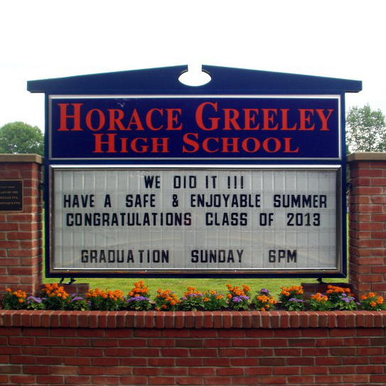
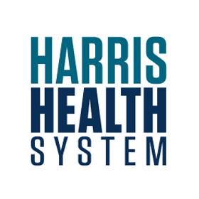
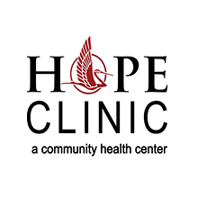
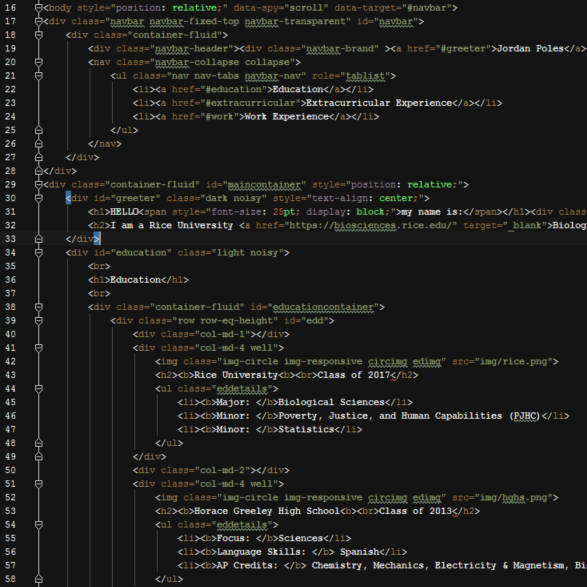

HELLOmy name is:
Jordan Poles
I am a Rice University Biological Sciences Major; Statistics and Poverty Justice and Human Capabilities Minor.
I am an avid tinkerer, programmer and DIYer with a passion for the sciences and a determination to tackle some of the innumerable problems present in modern healthcare.
Education
Rice University
Class of 2017
- Major: Biological Sciences
- Minor: Poverty, Justice, and Human Capabilities (PJHC)
- Minor: Statistics

Horace Greeley High School
Horace Greeley High School
Class of 2013
- Focus: Sciences
- Language Skills: Spanish
- AP Credits: Chemistry, Mechanics, Electricity & Magnetism, Biology, and European History
Extracurricular Experience

Ben Taub Hospital/Patient Discharge Initiative (PDI)
April 2014 - Present
Houston, TX
Director of Research/Patient Discharge Planner/Shift Leader
- Lead a team of two discharge volunteers on shifts, coordinating discharge activities, maintaining records, and discharging patients.
- Developed the initiative’s quality improvement program from the ground up.
Wiess College
April 2014 - Present
Houston, TX
Wiess Webmaster
- Completely redesigned the Wiess College Website
- Developed and maintained the college’s website and online resources.
- Built app to handle merchandise sale Venmo transactions.
Wiess College
February 2014 - Present
Houston, TX
Wiess Associates Committee Chair
- Chosen for leadership because of strong involvement with college associates.
- Coordinated the activities of a committee of other students responsible for organizing events
- Work alongside associates to coordinate college events and activities to help unify the community.
- Organized the associate's night banquet dinner.
Wiess College
February 2014 - Present
Houston, TX
Wiess Associate Justice
- Worked alongside a court of seven other justices to adjudicate, resolve inter-student disputes, infractions and other Wiess cases.
- Worked with the court to improve the safety of the on-campus drinking culture.
- Elected by the Wiess student body.
- Worked alongside a court of seven other justices to adjudicate, resolve inter-student disputes, infractions and other Wiess cases.
- Worked with the court to improve the safety of the on-campus drinking culture.
- Elected by the Wiess student body.

Rice Alternative Spring Break
February 2014 - Present
McAllen, TX
Alternative Spring Break Volunteer
- Volunteered with educators at the IDEA charter school working for an underserved, minority population living in the Rio Grande Valley.
- Engaged in extensive service learning regarding the improvement of the American education system.
- Volunteered with educators at the IDEA charter school working for an underserved, minority population living in the Rio Grande Valley.
- Engaged in extensive service learning regarding the improvement of the American education system.
Ben Taub Hospital/Patient Discharge Initiative (PDI)
September 2013 - April 2014
Houston, TX
Patient Discharge Volunteer
- Chosen through competitive application process
- Discharged patients from the ER, and discussed follow-up appointments, medications and available social services.
- Followed up with patients following discharge to answer questions, promote medication adherence, and encourage follow-up appointment attendance.
Ben Taub Hospital/Patient Discharge Initiative (PDI)
September 2013 - April 2014
Houston, TX
Patient Discharge Volunteer
- Chosen through competitive application process
- Discharged patients from the ER, and discussed follow-up appointments, medications and available social services.
- Followed up with patients following discharge to answer questions, promote medication adherence, and encourage follow-up appointment attendance.
Work Experience

HOPE Clinic
Summer 2015
Houston, TX
Medical Data Analysis Intern and Medical Scribe
- Will serve as a medical scribe alongside clinicians serving Houston’s indigent, immigrant, and refugee populations.
- Will analyze clinical data to identify trends in disease and treatment
- Will provide follow-up communication to patients with certain conditions/needs

Distilled Design and Freelance
2009 - Present
Chappaqua, NY
Co-Owner/Founder and Lead Web Developer
- Developed sites for awning vendors, electronic storefronts for fashion boutiques, and showcases for artisanal bakeries.
- Work for clients across the Northeast and as far as India.
Sue Bolen Publicity
2012 - 2014
Chappaqua, NY
Webmaster
- Responsible for regularly maintaining and updating content.
- Redesigned several pages.

NYU Department of Educational Informatics
2009 - 2010
New York, NY
Designer, Developer and Editor
- Developed Virtual Clinic and Learning Modules
- Developed medical reading list technology